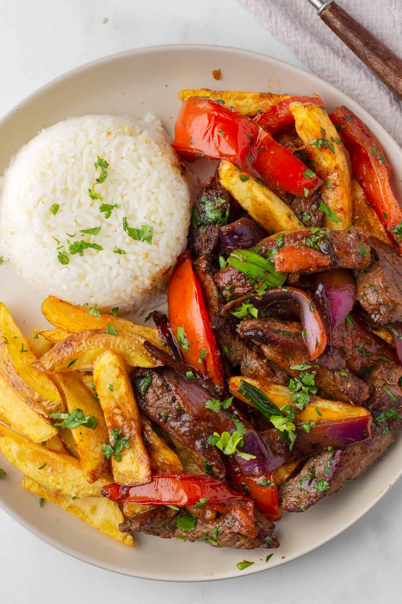

Main courses Ceviche: Raw fish "cooked" in lime juice and typically mixed with onions, chili peppers, and cilantro. Lomo Saltado: A stir-fry of beef, tomatoes, and onions, often served with french fries and rice. Pollo a la Brasa: Rotisserie chicken marinated in spices and herbs. Ají de Gallina: Shredded chicken in a creamy, spicy sauce made with yellow aji peppers, walnuts, and cheese.
